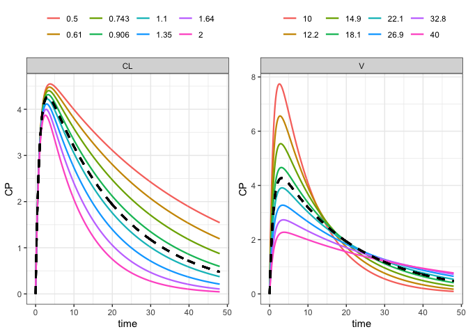
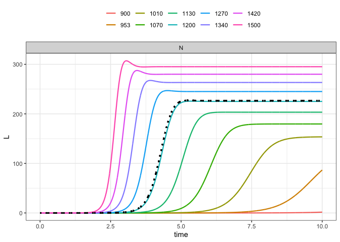
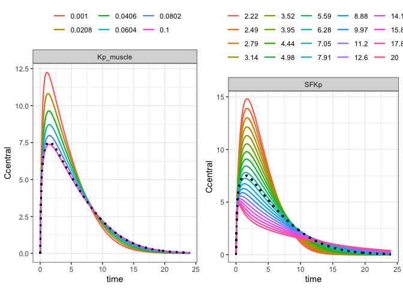

A simple, clean workflow for simulating from a model across sequences of parameters.
library(parseq)
. Loading required package: mrgsolve
.
. Attaching package: 'mrgsolve'
. The following object is masked from 'package:stats':
.
. filtermod <- mread("pk1", modlib(), end = 48, delta = 0.1)
param(mod)
The nominal (in model) parameter value is divided and multiplied by a factor, generating minimum and maximum bounds for simulating a sequence of parameter values
mod %>% ev(amt = 100) %>% parseq_factor(CL, V, .n=8) %>% sens_each() %>% sens_plot(CP)

The model is rifampicin PBPK.
mod <- mread("inst/example/rifampicin.cpp") %>% update(delta = 0.1)
mod %>% ev(amt = 600) %>% parseq_manual( SFKp = fct_seq(.$SFKp, .n = 20), Kp_muscle = even_seq(0.001, 0.1, .n = 6) ) %>% sens_each() %>% sens_plot(Ccentral, bw = TRUE)

To this point, we have always used sens_each so that each value for each parameter is simulated one at a time. Now, simulate the grid or all combinations.
We use parseq_cv here, which generates lower and upper bounds for the range using 50% coefficient of variation.
library(ggplot2) mod %>% ev(amt = 600) %>% parseq_cv(fBCLint_all_kg, SFKp, Kp_muscle, .n = 4, .cv = 50) %>% sens_grid() %>% sens_plot(Ccentral)
